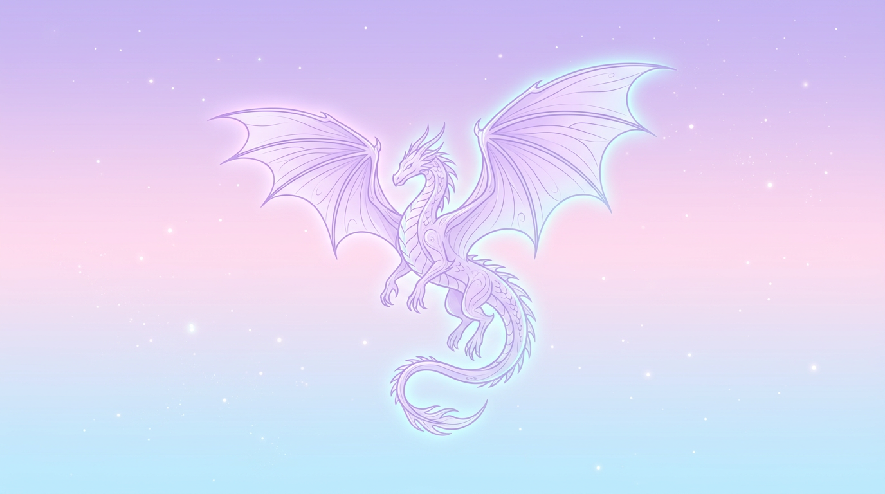

一个面向商家线索生成的自动化管道，组合 Serper 搜索、Google Maps/Facebook 页面解析、数据去重与 Supabase 存储。
- 周定时任务抓取、关键字生成、结果解析、商机线索存储
- FastAPI 提供 GET /leads、GET /stats 等浏览接口
- 支持 Supabase 持久化与后端去重逻辑

项目展示 / GitHub Pages
展示数据爬取、自动化、LLM 分析与后端服务方面的核心项目。 每个项目均包含完整的工程架构、功能实现与部署思路。
爬虫与数据管道、FastAPI 后端、LLM 与文本分析、浏览器自动化、Playwright / Ollama、Supabase 等。
展示商业场景、系统架构、功能实现、数据处理与自动化部署思路，便于 HR 了解我的技术深度。
作为 GitHub Pages 主页或仓库展示页面，可直接映射到 index.html，方便面试官快速访问。
一个面向商家线索生成的自动化管道，组合 Serper 搜索、Google Maps/Facebook 页面解析、数据去重与 Supabase 存储。
基于关键字抓取候选视频、评论采集与 LLM 过滤，最终生成痛点分析与商业输出建议。
竞品分析 + LLM 优化 + Shopify CSV 一键上传的全自动商品管道，支持两条路径：从竞品 URL 爬取或从 SKU 表格生成。